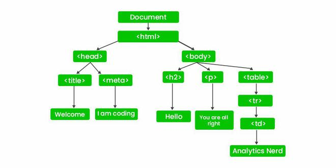
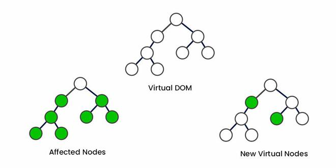

DOM
DOM stands for Document Object Model it is the structural representation of the HTML Document. Real DOM is the actual structure represented in the User Interface while Virtual DOM is the memory representation of the same. It is a tree-like Structure consisting of all nodes in an HTML document DOM represents the Ul of your applications.
Differences between Real Dom and Virtual Dom
|
Real DOM |
Virtual DOM |
|---|---|
|
Real DOM represent actual structure of the webpage. |
Virtual DOM represent the virtual/memory representation of the Webpage. |
| DOM manipulation is very expensive | DOM manipulation is very easy |
| There is too much memory wastage | No memory wastage |
| It updates Slow | It updates fast |
| It can directly update HTML | It can’t update HTML directly |
| Creates a new DOM if the element updates. | Update the JSX if the element update |
| It allows us to directly target any
specific node (HTML element) |
It can produce about 200,000 Virtual
DOM Nodes / Second. |
| It represents the Ul of your application | It is only a virtual representation of the DOM |

